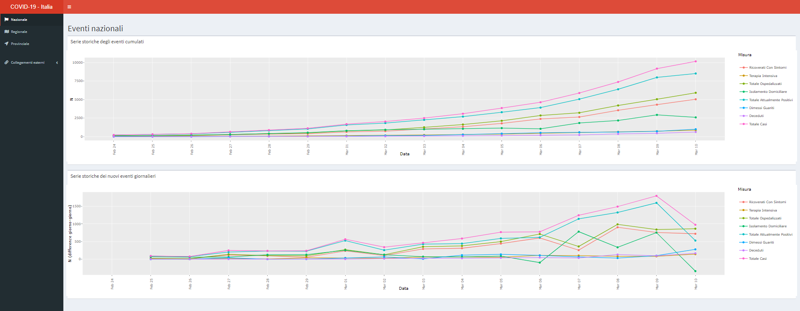

Lo scopo del pacchetto covid19ita è quello di fornire una piattaforma per il monitoraggio della diffusione dell’infezione da CoViD-19 in Italia.
The goal of covid19ita is to provide a platform for the monitoring of COVID-19 infection diffusion in Italy.
Installazione/Installation
È possibile installare la versione di sviluppo di covid19ita dal sorgente su GitHub tramite l’istruzione:
You can install the development version of covid19ita from the source on GitHub with:
# install.packages("remotes")
remotes::install_github("UBESP-DCTV/covid19ita")Nota per poter utilizzare gli accessi riservati sulla propria installazione locale e richiesto il pacchetto
{covid19.icuve}riservato all’uso esclusivo di chi ne ha diritto. Nel caso ci si trovasse in tale situazione e si volesse una installazione completa utilizzare l’istruzione seguente.remotes::install_github("UBESP-DCTV/covid19.icuve") remotes::install_github("UBESP-DCTV/covid19ita")Se autorizzati, il sistema completo verrà installato/aggiornato regolarmente.
Shiny App

Ultimo aggiornamento/Last app update: 2020-12-29 23:46:22.
È possibile visitare la Shiny App
covid19itaospitata e operante sui server UBEP (Unità di Biostatistica, Epidemiologia e Sanità Pubblica) QUI (versione italiana)
È inoltre possibile eseguire una versione dell’app locale sul proprio computer tramite:
You can visit the
covid19itaShiny App hosted and running on the UBEP (Unit of Biostatistics, Epidemiology, and Public Health) servers HERE (English version).
You can also run a local version of the app from your computer with:
Data
Il pacchetto covid19ita contiene le versioni R delle tre basi di dati ufficiali con dettaglio a livello nazionale, regionale e provinciale.
The covid19ita package provide R versions of the three official Italian COVID-19 datasets at national, regional and provincial level of detail.
Ultimo aggiornamento dati/Last data update: 2020-12-29 23:53:38.
È possibile accedere ai dati tramite:
Access the data with:
library(covid19ita)
data(dpc_covid19_ita_andamento_nazionale) # national level data
data(dpc_covid19_ita_regioni) # regional level data
data(dpc_covid19_ita_andamento_province) # provincial level dataÈ possibile accedere anche alla documentazione dei dati in uno dei seguenti modi:
You can access to the data documentation with any of:
?dpc_covid19_ita_andamento_nazionale
?dpc_covid19_ita_regioni
?dpc_covid19_ita_province
?dpc_covid19_itaAttribuzione dei dati/Data attribution
Licenza/License: CC-BY-4.0 - Visualizza licenza/View license
Autore dei dati/Dataset author/editor: Dipartimento della Protezione Civile
Fornitore dei dati/Data provided by: Ministero della Salute
Dati originariamente gestiti e processati da/Original data processing and management by: Dipartimento della Protezione Civile
Richiesta di funzionalità/Feature request
Per richiedere funzionalità aggiuntive è possibile aprire un issue.
If you need some more features, please open an issue.
Bug reports
Nel caso in cui si incontrasse un bug nelle funzioni del pacchetto, per favore si riporti un reprex all’interno di un issue.
If you encounter a bug in the package’s functions, please file a reprex (minimal reproducible example) in a issue.
Se si incontra un bug nell’applicazione, aprire un issue descrivendo: - Passaggi per riprodurre/vedere il problema - Descrizione del problema dettagliata - Descrizione di cosa ci si sarebbe aspettato
If you encounter a bug in the app, please describe: - The steps to reproduce/visualize the problem - The problem in detail - The behavior you expected
Codice di condotta/Code of Conduct
Il progetto covid19ita è sviluppato con un Codice di condotta per chi contribuisce. Dando il tuo contributo a questo progetto, accetti di rispettarne i termini.
Please note that the covid19ita project is released with a Contributor Code of Conduct. By contributing to this project, you agree to abide by its terms.